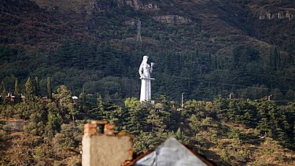

get to know georgia
„ქართვლის დედა“[1] — მონუმენტური ქანდაკება თბილისში, რომელიც ქალაქის ერთ-ერთი სიმბოლო გახდა. მონუმენტის ავტორია ქართველი მოქანდაკე ელგუჯა ამაშუკელი, რომელსაც 1966 წელს ამ ქანდაკებისთვის მიენიჭა შოთა რუსთაველის სახელობის სახელმწიფო პრემია.[2]
ქანდაკება სოლოლაკის გორაზე 1958 წელს აღიმართა ქალაქის 1500 წლისთავთან დაკავშირებით. თავდაპირველი გადაწყვეტილების თანახმად, ხის ალეგორიული ქანდაკება დედაქალაქს დროებით დაამშვენებდა, თუმცა მოგვიანებით ეს გადაწყვეტილება შეიცვალა. ამის გამო ხის ფაქტურა 1963 წელს ალუმინით დაიფარა, რათა ქანდაკება არ დაზიანებულიყო.[2]

1997 წელს კი ძველი ქანდაკება ახლით შეიცვალა. 20 მეტრის სიმაღლის ალუმინის ქართულ ეროვნულ სამოსში ჩაცმული ქალის ქანდაკების ავტორია ელგუჯა ამაშუკელი. „ქართვლის დედა“ არის ქართული ეროვნული ხასიათის სიმბოლო: ქანდაკებას ცალ ხელში ღვინის თასი უჭირავს მოყვართათვის, მეორეში კი ხმალი მტერთათვის.
ქანდაკების ძირში იშლება ხედი თბილისის ბოტანიკურ ბაღზე, აგრეთვე ბოტანიკური ბაღის ფარგლებში შესაძლებელია მდინარე წავკისისწყლის აღბეჭდვა, სადაც სამი ხიდია გადაგდებული.